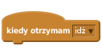
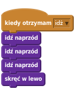
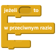
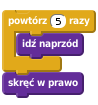

Wstęp
Na dzisiejszych zajęciach będziemy pracować z projektem, który jest już częściowo zrobiony. Bohaterem projektu jest głodny żuk, który bardzo chce zjeść wszystkie jabłka.
Krok 1: Remiks projektu w Scratchu
Zadania do wykonania
Zaloguj się do scratcha.
Wejdź na stronę https://scratch.mit.edu/projects/107271696/. Zajrzyj do środka.
Naciśnij przycisk
Remiksz prawej strony na górze ekranu. Dzięki temu stworzysz własną kopię projektu.
Krok 2: Zapoznaj się z Żukiem
W projekcie jest kilka duszków, ale będziesz zmieniać tylko skrypt Żuka. Do skryptów innych duszków nie musz zaglądać (choć możesz, jeśli chcesz).
Skrypt Żuka składa się na razie tylko z jednego bloku:

Do tego bloku będziesz dokładać kolejne, tak żeby utworzyć skrypt, który sprawi, że Żuk zje wszystkie jabłka.
Zadania do wykonania
Znajdź grupę
Więcej bloków. Powinny w niej być blokiidź naprzód,skręć w lewo,skręć w prawoiskocz.Klikaj myszką na bloki
idź naprzód,skręć w lewoi inne, i obserwuj jak zachowuje się Żuk.
Krok 3: Poziom 1
W tym kroku ułożysz skrypt, dzięki któremu Żuk zje wszystkie jabłka z planszy 1. Będą Ci do tego potrzebne bloki z grupy Więcej bloków i Kontrola.
Zadania do wykonania
Naciśnij zielony okrągły przycisk z cyfrą 1. Na planszy powinny pojawić się jabłka.
Dołącz trzy bloki
idź naprzódi jedenskręć w lewodo blokukiedy otrzymam [idź v]

Naciśnij przycisk 1 ponownie. Żuk powienien zjeść trzy jabłka a następnie skręcić w lewo.
Uzupełnij skrypt tak, żeby Żuk zjadł wszystkie jabłka.
Użyj pętli
Czy Twój skrypt zawiera kilka bloków idź naprzód jeden pod drugim? Jeśli tak, to spróbuj w miejsce takiej grupy powtarzających się bloków wstawić blokpowtórz ( ) razy.
Zapisz swój projekt
Krok 3: Poziom 2
Plansza 2 jest trudniejsza: na drodze Żuka pojawia się rzeka. Żuk nie umie pływać, ale może przeskakiwać rzekę.
Zadania do wykonania
Naciśnij przycisk 2.
Wstaw blok
skoczw odpowiednie miejsce w swoim skrypcie Żuka, tak żeby przeskakiwał rzekę.
Krok 4: Powrót na poziom 1
W tym kroku spróbujemy zmienić skrypt Żuka tak, żeby pasował zarówno do poziomu 1 jak i 2.
Zadania do wykonania
Naciśnij przycisk 1. Czy Żuk zjadł wszystkie jabłka?
Żuk powinien umieć sam zdecydować, czy stoi przed rzeką, którą powinien przeskoczyć, czy przed jabłkiem, ktore powinien zjeść! Spróbuj ułożyć taki program:
Jeżeli dotykam koloru niebieskiego, to skaczę. W przeciwnym razie, idę naprzód
Wskazówka
Użyj do tego tych bloków:

Zapisz swój projekt
Krok 5: Poziom 3
Naciśnij przycisk 3. Poziom 3 wydaje się z początku równie łatwy jak poziom 1.
Ale uwaga: po każdym naciśnięciu przycisku 3 poziom może wyglądać trochę inaczej.
Mimo, to skrypt Żuka powinien sobie radzić z każdym wariantem tego poziomu.
W Twoim skrypcie nie powinno być takich fragmentów:

bo czasem Żuk powinien zrobić tylko 4 kroki, a czasami aż 6.
Zadania do wykonania
- Spróbuj ułożyć taki program:
Zawsze jeżeli dotykam jabłka, to idę naprzód. W przeciwnym razie skręcam.
Wskazówka
Nowe bloki, których będziesz potrzebował to:

![dotyka [ ]?](76d5d83d5f6d26e009af9c21b19d065a447a70a2.png)
Zapisz swój projekt
Krok 6: Poziom 4
Poziom 4 jest taki jak 3: za każdym razem może wyglądać trochę inaczej. Do tego pojawia się rzeka.
Krok 7: Wszystkie poziomy
Skrypt, który pozwala Żukowi przejść poziom 4 powinien też radzić sobie z wcześniejszymi poziomami.
Sprawdź, czy tak jest.